Family Resemblance in Genre Stylistics
Ulrike Henny-Krahmer
(CLiGS, University of Würzburg)
Conference "Digital Stylistics in Romance Study and Beyond", University of Düsseldorf
March 1, 2019
Slides at: https://hennyu.github.io/dsrom_19/


Overview
- Genre categories: classes, types, family resemblance
- Case study: 19th century Spanish American novels
Genre categories: classes, types, family resemblance
Genre categories: classes, types, family resemblance
How do we categorize texts?
| classes | logical, disjunct | |
| types | ideal types at the center of fuzzy categories (e.g. prototype theory) | 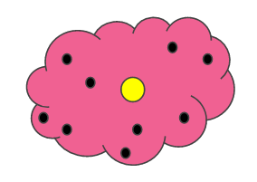 |
| family resemblance | overlapping similarities | 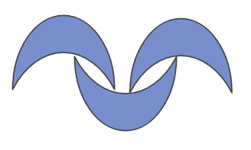 |
Family resemblance in genre theory
- Analogy used by Wittgenstein in his Philosophical Investigations
- originally used to describe linguistic activities
- taken up in genre theory since the 1960's (see Fowler 1982, Fishelov 1991, Hempfer 2014)
Family resemblance in genre theory
Consider, for example, the activities that we call "games". I mean board-games, card-games, ball-games, athletic games, and so on. What is common to them all? – Don't say: "They must have something in common, or they would not be called 'games'" – but look and see whether there is anything common to all. – For it you look at them, you won't see something that is common to all, but similarities, affinities, and a whole series of them at that. [...]
And the upshot of these considerations is: we see a complicated network of similarities overlapping and criss-crossing [...]
I can think of no better expression to characterize these similarities than "family resemblances"; for the various resemblances between members of a family – build, features, colour of eyes, gait, temperament, and so on and so forth – overlap and criss-cross in the same way. – And I shall say: 'games' form a family.
Wittgenstein, Philosophical Investigations, § 66-67.
Family resemblance in genre theory
In the German-speaking countries, Hans Robert Jauß was one of the first to explicitly reject the unquestioned identification of genres with classes in the logical sense of the word. Instead, he proposed the terminology of [...] 'groups or historical families' [(1972)...]. Shortly before, the term 'family' had also been used by Pichois and Rousseau (1967), justifying the analogy with the argument that 'genres', understood as 'historical concepts' in the same sense as proposed by [...] Jauß, represented a "série infinie d'œuvres particulières, ni absolumment identiques ni totalement différentes" [...]
When examining the texts labelled elegy in various European national literatures from antiquity up to the twentieth century, they, like Wittgenstein's games, reveal no other commonality but their name, elegy [...]
The diachrony of the genre can be represented as a synchronic network of relations, in which each individual text or epochal version of the genre is linked to other historical versions through common features. [...] The genre identiy, then, is not produced by a single trait but by the entirety of all relations among their historical versions.
Hempfer, Some Aspects of a Theory of Genre, 2014: 407, 417, 419.
Family resemblance in digital genre stylistics?
- often: classification (e.g. Hettinger et al. 2016, Schöch et al. 2016)
- also: clustering (e.g. Calvo Tello et al. 2017), networks
- family resemblance has not been explicitly modelled yet
Case study: 19th century Spanish American novels
Overview
- Questions and goals
- Approach
- Corpus
- Methods
- Results
Questions and goals
- How can the concept of family resemblance be formalized & applied in a digital stylistic analysis of genre?
- Gain new insights about genres (case study):
- How are the texts within a certain genre interrelated according to different features? Are there subgroups?
- (How are the texts of different genres interrelated when no strict classification is applied?)
Approach: Network analysis
- Calculate similarities between texts on the basis of different feature sets (here: Topics, MFW)
- Mapping of textual similarities onto a network structure
- Eder (2017): ranking of nearest neighbours = basis for relationships (edges) in the network
- Here: extension of Eder's approach
- communities
- multigraph
Corpus
|
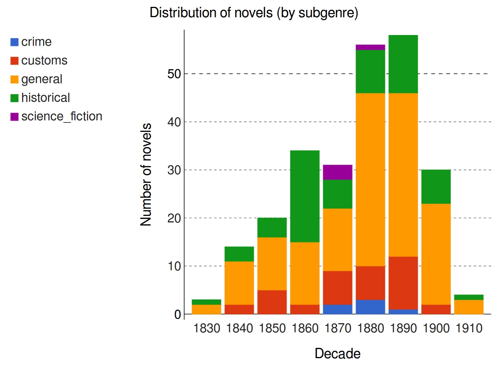 |
Methods
- Feature generation
- MFW: Python, scikit-learn
- Topic Modeling: Mallet (McCallum 2002), tmw (Schöch et al., https://github.com/cligs/tmw)
- Network
- Python, scikit-learn, NetworkX
- calculate text similarities: cosine similarity
- nodes: individual texts
- edges: connections to nearest neighbours
- simple graph: for 1 feature set
- multigraph: for several feature sets
- Community detection
- Louvain modularity (Blondel et al. 2008), https://github.com/taynaud/python-louvain
Methods
Decision on parameters
- 100 Topics
- 1000 MFW
- 3 nearest neighbours
Results
for
- historical novels (37, ARG: 14, MEX: 18, CUB: 5)
- 1 novel per author
- networks: topics, MFW, topics+MFW
Results: historical novel (100tp, 3nn)
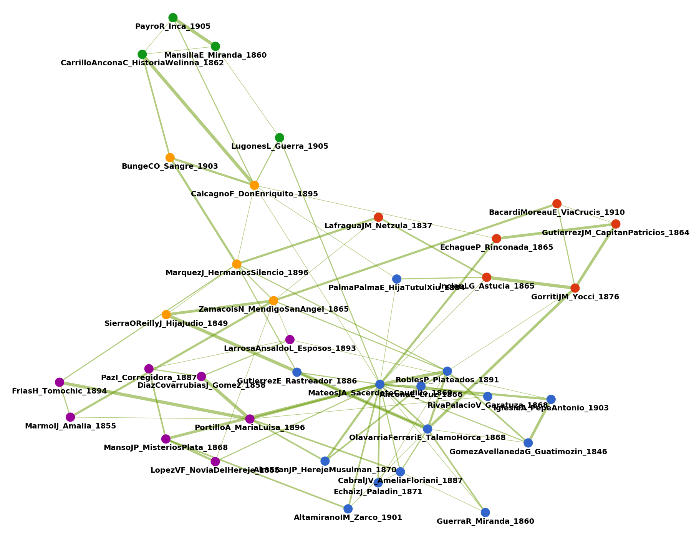Results: historical novel (100tp, 3nn)
|
|
|
|||||||||||||||||||||||||||||||||||||||||||||||||||||||||||||||||||||||
|
|
Results: historical novel (100tp, 3nn), Cluster 1
| 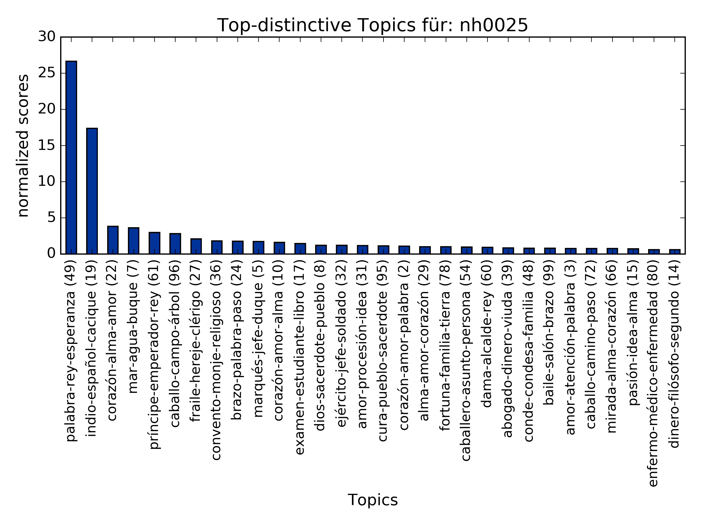 | 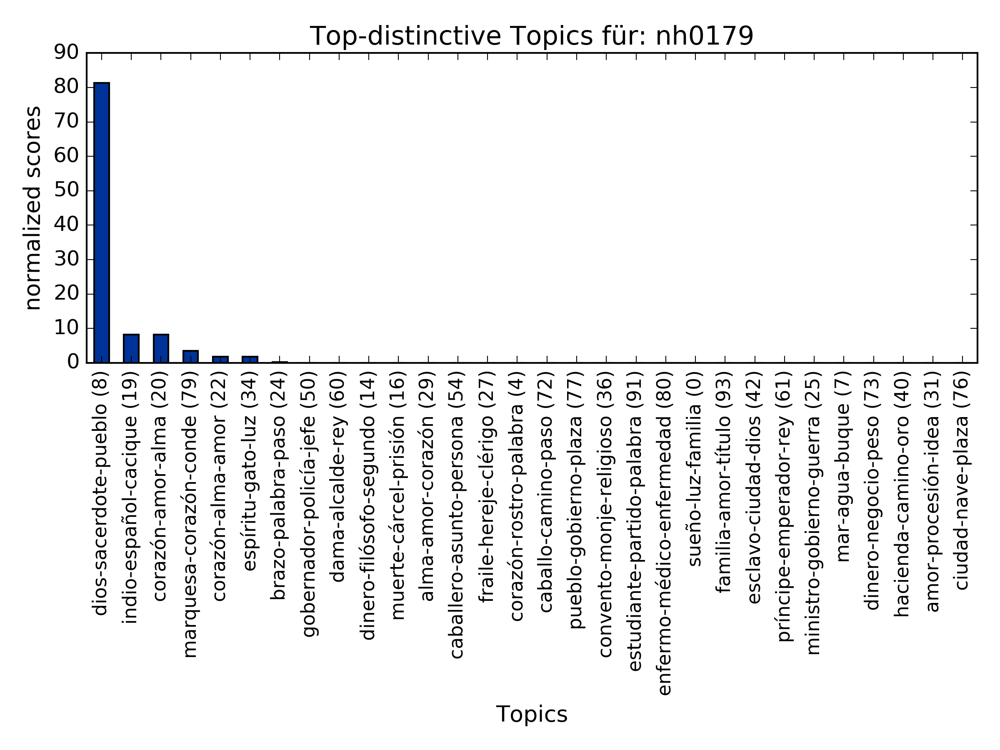 |
| 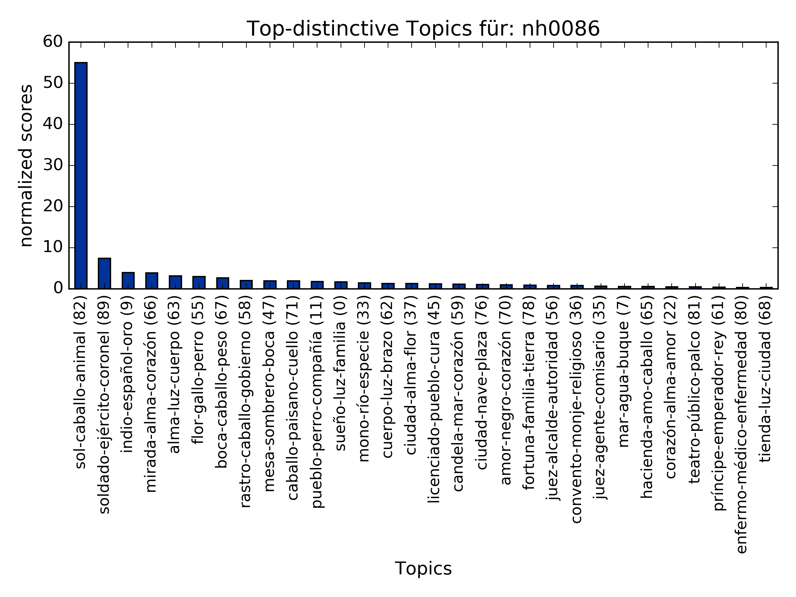 | 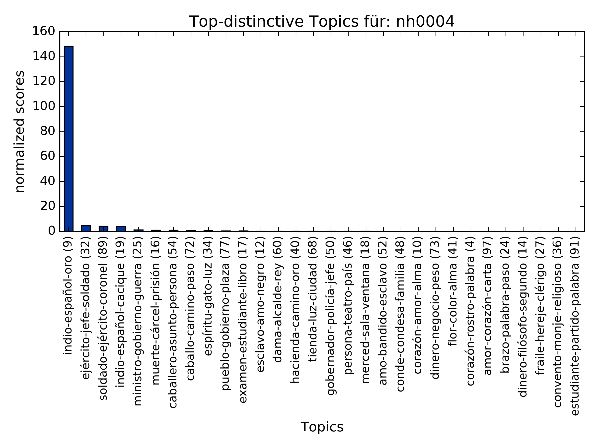 |
{kind=link}
{kind=link}
{kind=link}
{kind=link}
Results: historical novel (100tp, 3nn), Cluster 1
| 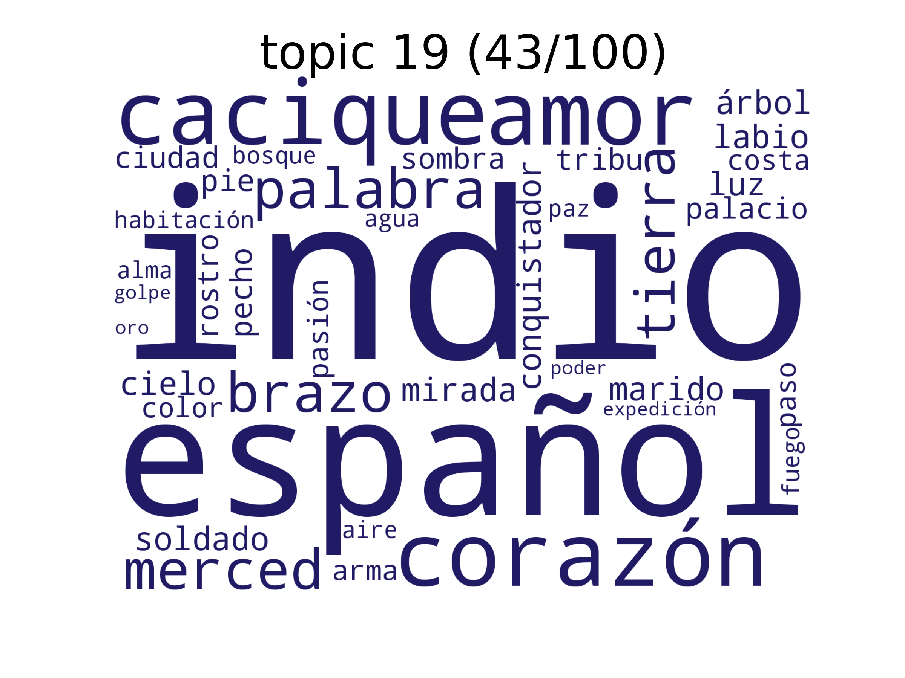 | 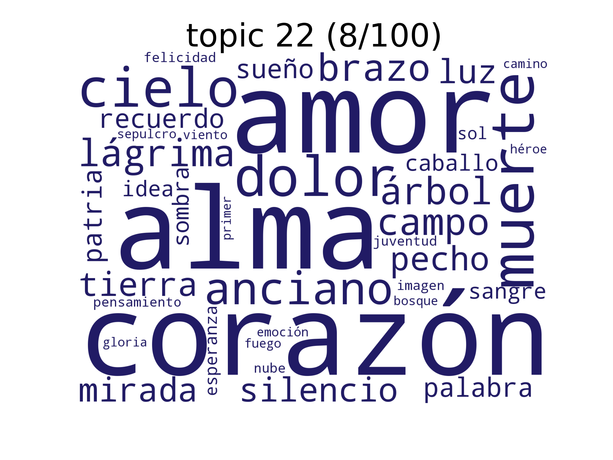 |
| 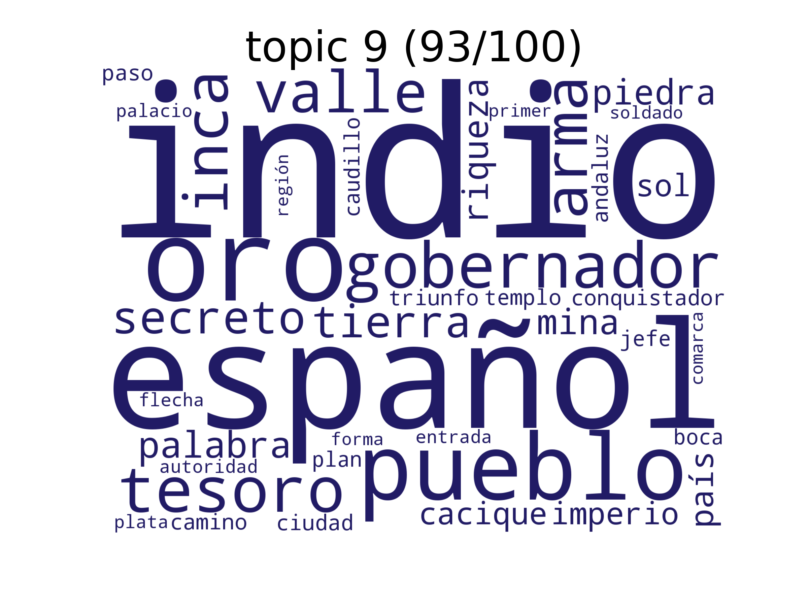 | 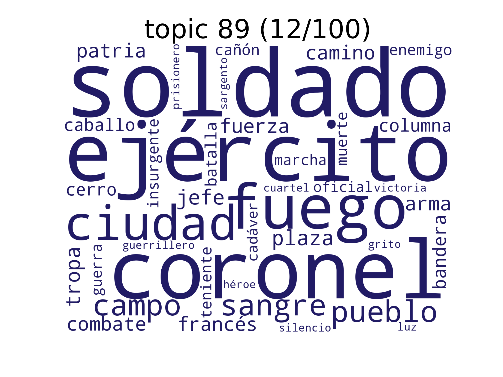 |
Results: historical novel (1000mfw, 3nn)
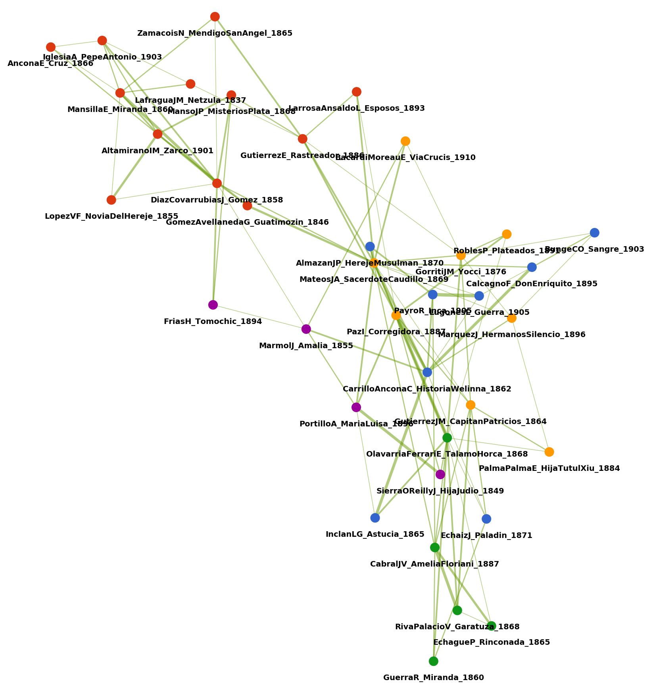Results: historical novel (1000mfw, 3nn)
|
|
|
|||||||||||||||||||||||||||||||||||||||||||||||||||||||||||||||||||||||||||||||||||||||||||||
|
|
Results: historical novel (1000mfw, 3nn), Cluster 1 vs. Cluster 3
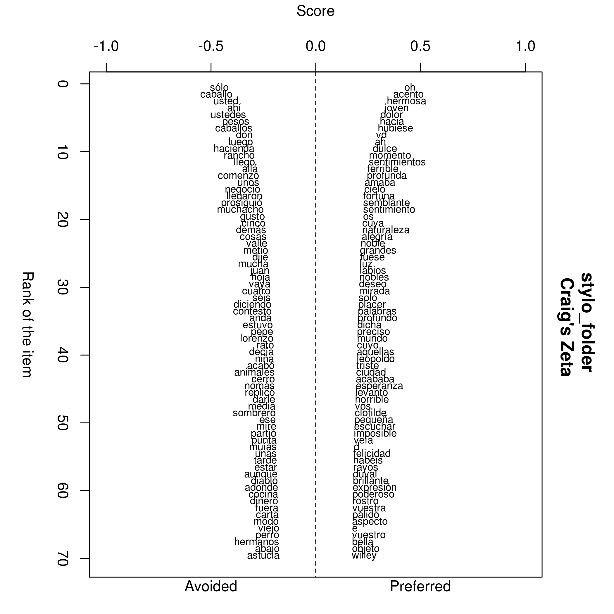{kind=link}
Results: historical novel (multinetwork)
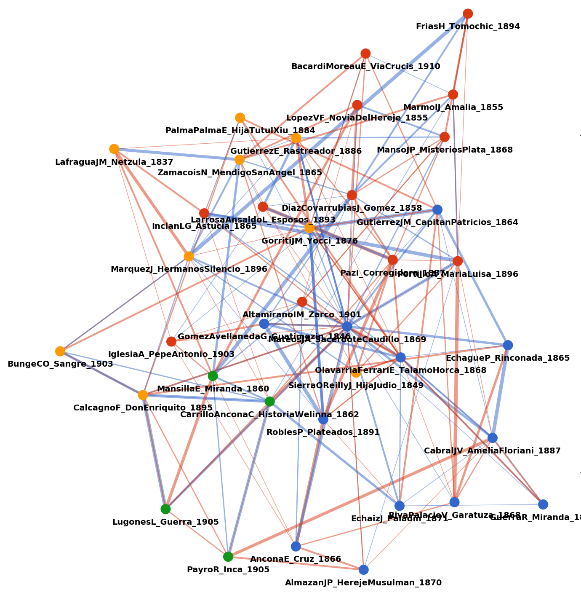Conclusions
Conclusions
- network analysis suggests itself for family resemblance
- subgroups of genres can be identified (and interpreted) for different (& several) feature sets
- indirect relationships can be found within subgroups
- digital approach:
- family resemblance as a more general principle
- not only for diachronic genre development
- not only for genre
- more open than classification
- communities: delimitation
Conclusions
- Spanish American historical novel: exists!
- subgroups not due to country
- apparently common strategies for topics (which period is treated? love story involved?)
Next steps
- include other features (places, persons -> named entities; grammatical categories; ...)
- vary parameters
- of the features (Topic Modeling settings, MFW)
- of the network (number of nearest neighbours, community detection algorithm)
- analyze other subgenres (novel of customs, general novel)
- look at two or more subgenres together
Thank you!
Slides at: https://hennyu.github.io/dsrom_19/
CLiGS: http://cligs.hypotheses.de/
References
- Blondel, Vincent D., Jean-Loup Guillaume, Renaud Lambiotte, Etienne Lefebvre (2008). Fast unfolding of communities in large networks. Journal of Statistical Mechanics: Theory and Experiment 10. DOI: https://doi.org/10.1088/1742-5468/2008/10/P10008.
- Calvo Tello, José, Daniel Schlör, Ulrike Henny, and Christof Schöch (2017). Neutralizing the Authorial Signal in Delta by Penalization: Stylometric Clustering of Genre in Spanish Novels. DH2017. Montreal: McGill University & Université de Montréal: 181-184. https://dh2017.adho.org/abstracts/DH2017-abstracts.pdf.
- Eder, Maciej (2017). Visualization in stylometry: Cluster analysis using networks. Digital Scholarship in the Humanities 32 (1). DOI: https://doi.org/10.1093/llc/fqv061.
- Fishelov, David (1991). Genre theory and family resemblance. Poetics 20: 123-138.
- Fowler, Alastair (1982). Kind of Literature. An Introduction to the Theory of Genres and Modes. Oxford: Clarendon Press.
- Hempfer, Klaus W. (2014). Some Aspects of a Theory of Genre. Linguistics and Literary Studies: Interfaces, Encounters, Transfers. Edited by Monika Fludernik and Daniel Jakob. Berlin: De Gruyter: 405-422.
- Hettinger, Lena, Fotis Jannidis, Isabella Reger, and Andreas Hotho (2016). Classification of Literary Subgenres. DHd2016. Leipzig: Universität Leipzig: 154-158. http://dhd2016.de/boa.pdf.
- McCallum, Andrew Kachites (2002). MALLET: A Machine Learning for Language Toolkit. http://mallet.cs.umass.edu.
- Schöch, Christof, Ulrike Henny, José Calvo Tello, Daniel Schlör, and Stefanie Popp (2016). Topic, Genre, Text: Topics im Textverlauf von Untergattungen des spanischen und hispanoamerikanischen Romans (1880-1930). DHd2016. Leipzig: Universität Leipzig: 235-239. http://dhd2016.de/boa.pdf.
- Wittgenstein, Ludwig (2009). Philosophical Investigations. Edited by P.M.S. Hacker and Joachim Schulte. New York: Wiley.